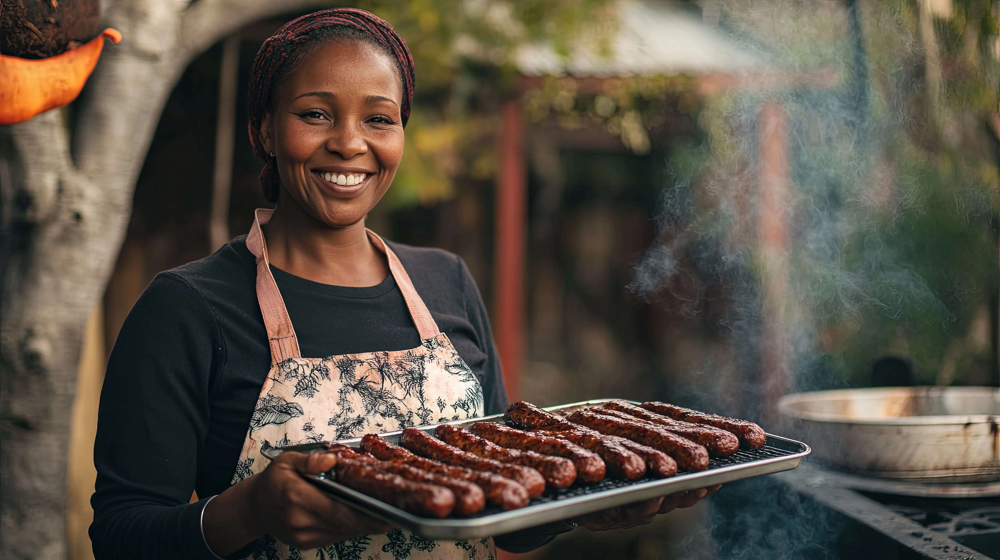
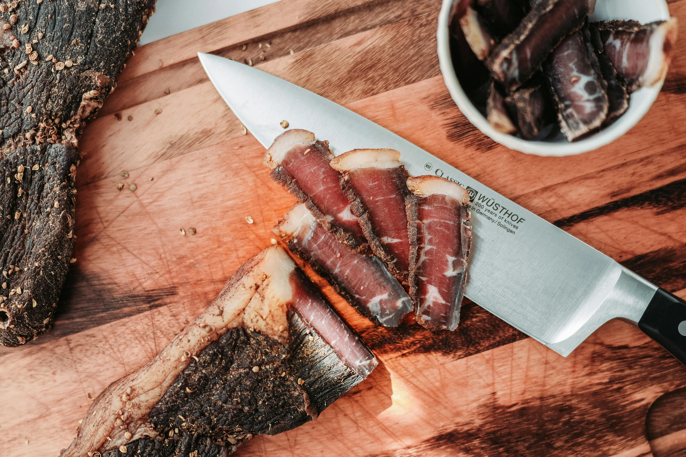
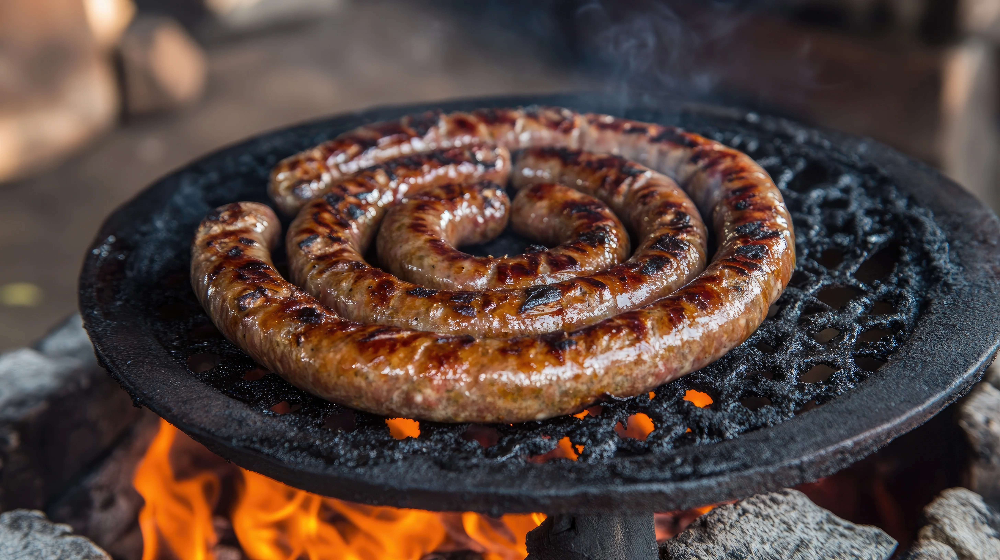
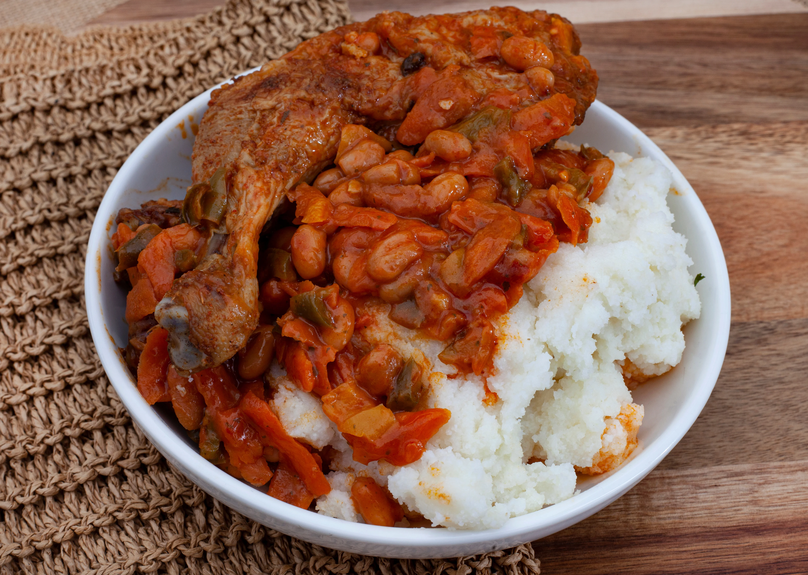
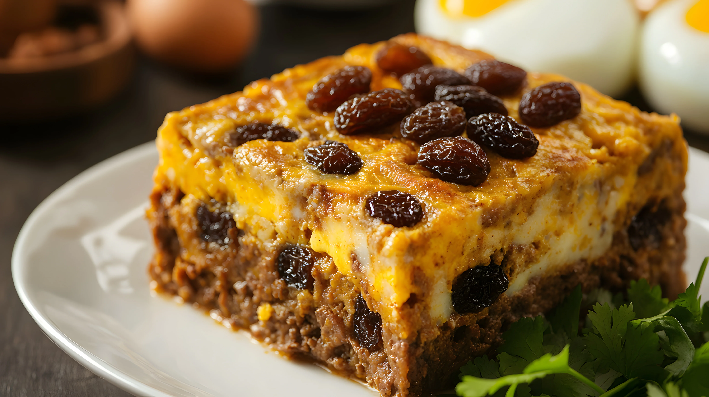
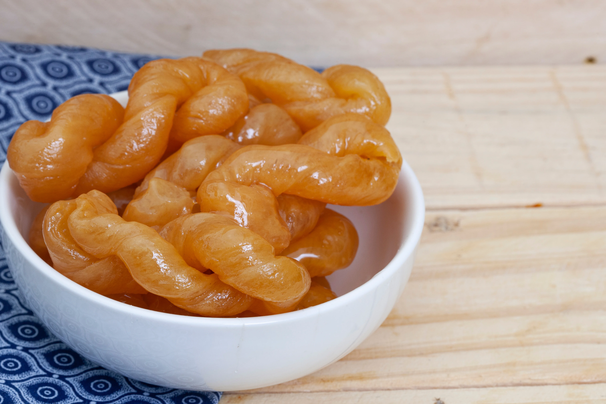

Hungry Yet?
With a variety of flavors and spices, South African cuisine leaves little to be desired.

Biltong
Biltong is a type of cured dried meat that's popular across Africa, especially in South Africa. The name comes from the Dutch words 'bil', meaning meat, and 'tong' meaning strip. Unlike the meat jerky you might be familiar with, which is usually sliced, marinated, and cooked, biltong is first cured in vinegar, then airdried and cut into strips. This process results in buttery-soft and intensely flavourful dried meat.

Boerewors
One of the most popular foods in South Africa, boerewors, or farmer’s sausage, is a type of sausage made from beef mince that is enjoyed throughout the country. While they may seem simple, these delicious sausages follow strict guidelines and must contain 90% meat to count as boerewors. The remaining 10% is for spices like cloves, nutmeg, and coriander, or other ingredients, such as lamb or pork, which are added to give a richer flavour.

Chakalaka & Pap
Two other popular braai side dishes, chakalaka and pap, are often enjoyed alongside mains just like boerewors. Chakalaka is a vegetable-based South African dish that combines beans, onions, peppers, carrots, and a unique blend of spices to create a punchy side that is great alongside meat. It’s also often served with pap, a corn meal side that’s similar to polenta.

Bobotie
Considered by many to be the South African national dish, Bobotie (pronounced ba-bo-tea) is a meat-based dish and one of the most well-known examples of Cape Malay cuisine. This hearty meal combines minced meat, typically lamb or beef, with curry spices (turmeric, cumin, curry powder) onions, milk-soaked bread, and dried fruit, usually raisins or sultanas. The meat is topped with an egg and milk mixture and baked in the oven. It’s usually served with yellow rice, another staple South African food.

Koeksisters
Another unmissable sweet treat is koeksister, a sweet pastry made from plaited dough that's fried and then coated in a sticky and sweet syrup, giving it a deliciously crunchy finish. If you're in Cape Town, you should also look out for koeksister, the Cape Malay version of the dish. This variant comes in the form of fried dough balls, often rolled in cinnamon or coconut.